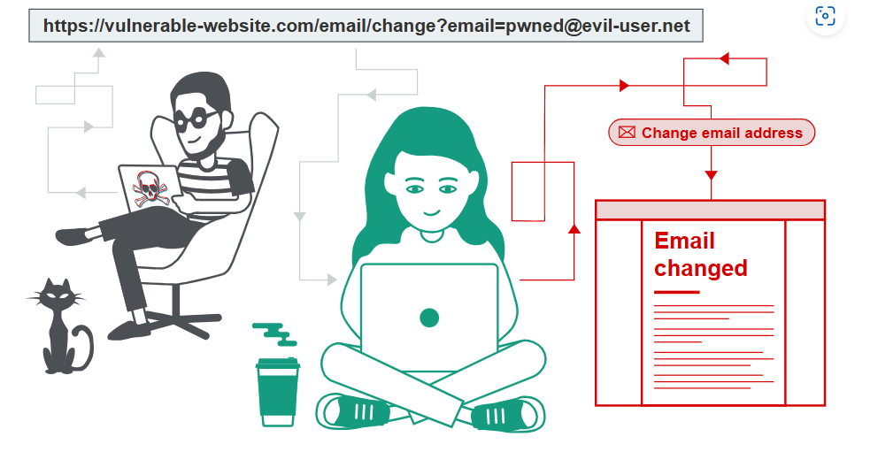

Cross-site request forgery (CSRF)
In this section, we’ll explain what cross-site request forgery is, describe some examples of common CSRF vulnerabilities, and explain how to prevent CSRF attacks.
What is CSRF?
Cross-site request forgery (also known as CSRF) is a web security vulnerability that allows an attacker to induce users to perform actions that they do not intend to perform. It allows an attacker to partly circumvent the same origin policy, which is designed to prevent different websites from interfering with each other.

Labs
If you’re already familiar with the basic concepts behind CSRF vulnerabilities and just want to practice exploiting them on some realistic, deliberately vulnerable targets, you can access all of the labs in this topic from the link below.
What is the impact of a CSRF attack?
In a successful CSRF attack, the attacker causes the victim user to carry out an action unintentionally. For example, this might be to change the email address on their account, to change their password, or to make a funds transfer. Depending on the nature of the action, the attacker might be able to gain full control over the user’s account. If the compromised user has a privileged role within the application, then the attacker might be able to take full control of all the application’s data and functionality.
How does CSRF work?
For a CSRF attack to be possible, three key conditions must be in place:
A relevant action. There is an action within the application that the attacker has a reason to induce. This might be a privileged action (such as modifying permissions for other users) or any action on user-specific data (such as changing the user’s own password).
Cookie-based session handling. Performing the action involves issuing one or more HTTP requests, and the application relies solely on session cookies to identify the user who has made the requests. There is no other mechanism in place for tracking sessions or validating user requests.
No unpredictable request parameters. The requests that perform the action do not contain any parameters whose values the attacker cannot determine or guess. For example, when causing a user to change their password, the function is not vulnerable if an attacker needs to know the value of the existing password.
For example, suppose an application contains a function that lets the user change the email address on their account. When a user performs this action, they make an HTTP request like the following:
POST /email/change HTTP/1.1
Host: vulnerable-website.com
Content-Type: application/x-www-form-urlencoded
Content-Length: 30
Cookie: session=yvthwsztyeQkAPzeQ5gHgTvlyxHfsAfE
email=wiener@normal-user.com
This meets the conditions required for CSRF:
The action of changing the email address on a user’s account is of interest to an attacker. Following this action, the attacker will typically be able to trigger a password reset and take full control of the user’s account.
The application uses a session cookie to identify which user issued the request. There are no other tokens or mechanisms in place to track user sessions.
The attacker can easily determine the values of the request parameters that are needed to perform the action.
With these conditions in place, the attacker can construct a web page containing the following HTML:
<html>
<body>
<form action="https://vulnerable-website.com/email/change" method="POST">
<input type="hidden" name="email" value="pwned@evil-user.net" />
</form>
<script>
document.forms[0].submit();
</script>
</body>
</html>
If a victim user visits the attacker’s web page, the following will happen:
The attacker’s page will trigger an HTTP request to the vulnerable web site.
If the user is logged in to the vulnerable web site, their browser will automatically include their session cookie in the request (assuming SameSite cookies are not being used).
The vulnerable web site will process the request in the normal way, treat it as having been made by the victim user, and change their email address.
Note
Although CSRF is normally described in relation to cookie-based session handling, it also arises in other contexts where the application automatically adds some user credentials to requests, such as HTTP Basic authentication and certificate-based authentication.
How to construct a CSRF attack
Manually creating the HTML needed for a CSRF exploit can be cumbersome, particularly where the desired request contains a large number of parameters, or there are other quirks in the request. The easiest way to construct a CSRF exploit is using the CSRF PoC generator that is built in to Burp Suite Professional:
Select a request anywhere in Burp Suite Professional that you want to test or exploit.
From the right-click context menu, select Engagement tools / Generate CSRF PoC.
Burp Suite will generate some HTML that will trigger the selected request (minus cookies, which will be added automatically by the victim’s browser).
You can tweak various options in the CSRF PoC generator to fine-tune aspects of the attack. You might need to do this in some unusual situations to deal with quirky features of requests.
Copy the generated HTML into a web page, view it in a browser that is logged in to the vulnerable web site, and test whether the intended request is issued successfully and the desired action occurs.
LAB
How to deliver a CSRF exploit
The delivery mechanisms for cross-site request forgery attacks are essentially the same as for reflected XSS. Typically, the attacker will place the malicious HTML onto a web site that they control, and then induce victims to visit that web site. This might be done by feeding the user a link to the web site, via an email or social media message. Or if the attack is placed into a popular web site (for example, in a user comment), they might just wait for users to visit the web site.
Note that some simple CSRF exploits employ the GET method and can be fully self-contained with a single URL on the vulnerable web site. In this situation, the attacker may not need to employ an external site, and can directly feed victims a malicious URL on the vulnerable domain. In the preceding example, if the request to change email address can be performed with the GET method, then a self-contained attack would look like this:
<img src="https://vulnerable-website.com/email/change?email=pwned@evil-user.net">
Read more
Common defences against CSRF
Nowadays, successfully finding and exploiting CSRF vulnerabilities often involves bypassing anti-CSRF measures deployed by the target website, the victim’s browser, or both. The most common defenses you’ll encounter are as follows:
CSRF tokens - A CSRF token is a unique, secret, and unpredictable value that is generated by the server-side application and shared with the client. When attempting to perform a sensitive action, such as submitting a form, the client must include the correct CSRF token in the request. This makes it very difficult for an attacker to construct a valid request on behalf of the victim.
SameSite cookies - SameSite is a browser security mechanism that determines when a website’s cookies are included in requests originating from other websites. As requests to perform sensitive actions typically require an authenticated session cookie, the appropriate SameSite restrictions may prevent an attacker from triggering these actions cross-site. Since 2021, Chrome enforces
LaxSameSite restrictions by default. As this is the proposed standard, we expect other major browsers to adopt this behavior in future.Referer-based validation - Some applications make use of the HTTP Referer header to attempt to defend against CSRF attacks, normally by verifying that the request originated from the application’s own domain. This is generally less effective than CSRF token validation.
For a more detailed description of each of these defenses, as well as how they can potentially be bypassed, check out the following materials. These include interactive labs that let you practice what you’ve learned on realistic, deliberately vulnerable targets.
Read more
For details on how to properly implement these defenses in order to prevent some of these issues on your own websites, see How to prevent CSRF vulnerabilities